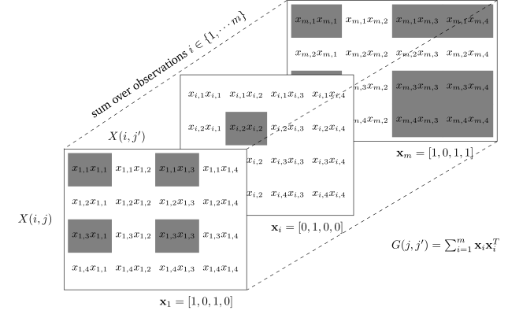

Latent Graphs with Desire Paths
“A desire path is no more than the trace of a decision—less than that, an impulse—to find a new way to join what we know with what we have yet to discover.”
– David Farrier
Addressing gaps discussed in Roads to Network Recovery to reach a generative model for network recovery requires careful attention to the generation mechanism for node activations. While there are many ways we might imagine bipartite data to be be generated, presuming the existence of a dependency graph that causes activation patterns will give us useful ways to narrow down the generative specification.
First, we will investigate the common assumption that pairwise co-occurrences can serve as proxies for measuring relatedness, and how this “gambit of the group” is, in fact, a strong bias toward dense, clique-filled recovered networks. Using the relationship between matrix products and sums of vector outer-products, we then motivate a generalization of co-occurrence estimation that can be flexibly adapted to domain knowledge, as appropriate, and avoid undue clique bias altogether. Finally, we propose a simple mechanism to frame network reconstruction as combinations of multiple overlaid subgraphs, by treating edges as i.i.d. Beta-Bernoulli random variables.
Inspired by the behavior of so-called “desire paths”, we constrain the beta prior to ensure desired behavior, which we call the Desire Path Density estimate of the global graph structure.
The Gambit of the Inner Product
As we saw repeatedly in Roads to Network Recovery, networks are regularly assumed to arise from co-occurrences, whether directly as counts or weighted in some way. This assumption can be a significant a source of bias in the measurement of edges. In this section we provide an intuitive understanding for why a flat count of co-occurrence leads to “hairballs” (specifically, a bias for dense clusters and cliques), related to the use of matrix products on node activation design matrices.
Gambit of the Group
It seems reasonable, when interactions are unobserved, to assume some evidence for all possible interactions is implied by co-occurrence. However, similar to the use of uniform priors in other types of inference, if we don’t have a good reason to employ a fully-connected co-occurrence prior on interaction dependencies, we are adding systematic bias to our inference. Whether co-occurrence observations can be used to infer interaction networks directly was discussed at length in [1], where they call this the gambit of the group.
“So, consiously or unconsciously, many ethnologists studying social organization makr what might be called the ‘gambit of the group’: they assume that animals which are clustered […] are interacting with one another and then use membership of the same cluster […] to define association.”
[1]
H. Whitehead and S. Dufault, “Techniques for analyzing vertebrate social structure using identified individuals: Review and recommendations,” Advances in the Study of Behavior, vol. 28, no. 28, pp. 33–74, 1999.
This work was rediscovered in the context of measuring assortativity for social networks,1 where the author of [2] advises that “group-based methods” can introduce sampling bias to the calculation of assortativity, namely, systematic overestimation when the sample count is low.
1 Assortativity is, roughly, the correlation between node degree and the degrees of its neighbors.
[2]
D. N. Fisher, M. J. Silk, and D. W. Franks, “The perceived assortativity of social networks: Methodological problems and solutions,” in Trends in social network analysis, Springer International Publishing, 2017, pp. 1–19. doi: 10.1007/978-3-319-53420-6_1.
A reader can analyze general problems with failing to specify a model of what “edges” actually are more in-depth in [3]. They also include a warning not to naively use correlational measures with a threshold, since even simple 3-node systems will easily yield false positives edges. Still, it would be helpful for practitioners to have a more explicit mental model of why co-occurence-based models yield systematic bias, and use that to build an alternative having some of the same benefits (speed, interpretability, uncertainty quantification, etc.)
Inner-Product projections and “clique bias”
Underlying correlation and co-occurrence models for edge strength is a reliance on matrices of inner products between node occurrence vectors. They all use gram matrices (or centered/scaled versions of them), which were brought up in Distance vs. Incidence. The matrix multiplication performed represents inner products between all pairs of feature vectors. For \(X(i,j)\in\mathbb{B}\), these inner products sum together the times in each observation that two nodes were activated together.
However, another (equivalent) way to view matrix multiplication is as a sum of outer products \[ G(j,j') = X^T X = \sum_{i=1}^m X(i,j)X(i,j')= \sum_{i=1}^m \mathbf{x}_i\mathbf{x}_i^T \] Those outer products of binary vectors create \(m\times m\) matrices that have a 1 in every \(j,j'\) entry where nodes \(j,j'\) both occurred, shown in Figure 5.1. Each outer product is effectively operating as a \(D_i+A_i\) with degrees normalized to 1. If the off-diagonals can be seen as adjacency matrices, they would strictly represent a clique on nodes activated in the \(i\)th observation In this sense, any method that involves transforming or re-weighting a gram matrix, is implicitly believing that the \(i\)th observation is a complete graph for all \(i\). This is illustrated in Figure 5.2.
If every observation of node activations leads to an implied clique, we can reframe much of the “hairball” effect as a systematic bias (i.e. measurement error in the sense of_trueness_). We call this clique bias: the inferred graph will inherently include more and more cliques of node subsets as data arrives (assumed to themselves be cliques).
For many modeling scenarios, this paradigm allows practitioners to make a more straight-forward intuition-check: do clique observations make sense here? When a list of authors for a paper is finished, does that imply that all authors mutually interacted with all others directly to equally arrive at the decision to publish? This would be similar to assuming the authors might simultaneously enter the same room, look at a number of others (who all look exclusively at each other, as well), and all at once decide to publish together.
Or, from the standpoint of scaling: does each extra node activation impart an amount of information that depends on the number of activated nodes? Put another way, if we knew our observations were on a planar graph, each node might require around 3 new edges.2 A tree or path adds one new edge for each new node. But a clique assumption means that each extra node activation adds edges quadratically in the number of already-activated nodes. Does this make sense? In our introduction, we described a more likely scenario we could expect from an observer on the ground: a researcher asks a colleague or two to collaborate, who might know a couple more with relevant expertise, and so on. From purely a logistical standpoint, it quickly becomes unfeasible for authors to mutually collaborate with all other co-authors equally: 10 coauthors already implies the 10th had to equally split interaction among 9 others to satisfy our model.
2 Triangulations are worst-case, so \(|E|\leq 3|V|-6\) due to Euler’s formula
Networks as Desire Path Density Estimates
Unfortunately, methods based on inner-product thresholding are still incredibly common, in no small part due to how easy it is to create them from occurrence data, regardless of this “clique-bias”. The ability to map an operation onto every observation, e.g., in parallel, and then reduce all the observations into an aggregate edge estimate is a highly desirable algorithmic trait. This may be a reason so many projection and backboning techniques attempt to re-weight (but retain) the same basic structure, time and again.
What we need is a way to maintain the ease-of-use of inner-product network creation:
- Map an operation onto each observation
- Reduce to an aggregate edge guess over all observations
but with a more domain-appropriate operator at the observation level.
Let’s start with replacements for the clique assumption. There are many non-clique classes of graphs we might believe local interactions occur on: path-graphs, trees, or any number of graphs that reflect the topolgy or mechanism of local interactions in our domain of interest. Authors have proposed classes of graphs that mirror human perception of set shapes [4]3, or graphs whose modeled dependencies are strictly planar [5]4. Alternatively, the interactions might be scale free, small-world, trees, or samples from stochastic block models.[6] In any case, these assumptions provide an explicit way to describe the set of possible interaction graphs we believe our individual observations are sampled from.
3 e.g., for dependencies based on perception, such as human decision making tendencies, or causes based on color names.
[5]
M. Tumminello, T. Aste, T. Di Matteo, and R. N. Mantegna, “A tool for filtering information in complex systems,” Proceedings of the National Academy of Sciences, vol. 102, no. 30, pp. 10421–10426, 2005.
4 e.g., when interactions are limited to planar dependencies, like inferring ancient geographic borders.
[6]
P. W. Holland, K. B. Laskey, and S. Leinhardt, “Stochastic blockmodels: First steps,” Social Networks, vol. 5, no. 2, pp. 109–137, Jun. 1983, doi: 10.1016/0378-8733(83)90021-7.
Subgraph Distributions
Let’s use the notation from Equation 3.9, such that each observation of nodes \(\mathbf{x}_i\) is implicitly derived from a set of activated edges \(\mathbf{r_i}\). To start, our current belief about what overall structure the whole network can take is \(G^*=(V,E,B^*)\), where \(B^*\) might always return \(1\) to start out (the complete graph). To further constrain the problem, let us assume that node activation is noiseless: any activated nodes were truly activated, and unactivated nodes were truly inactive (no false negative or false positive activations).5 So, each \(\mathbf{x}_i\) will induce a subgraph \(g_i = G^*[V_i]\), where \(V_i = \{v\in \mathcal{V} | X(i,\mathcal{V})=1\}\). Then, our domain knowledge takes the form of a constraint on edges within that subgraph, which will induce a family of subgraphs on \(g_i\). This family \(\mathcal{C}_i\) belongs to the relevant class of graphs \(\mathcal{C}\), limited to nodes \(V_i\), i.e.,
5 Hidden nodes (unobserved nodes beyond the \(n\)) are outside the scope of this work, though could potentially be implied for certain structures e.g., when the metric is known to be tree-like. [7] use a greedy embedding that minimizes distortion to estimate the need for added Steiner nodes.
[7]
R. Sonthalia and A. C. Gilbert, “Tree! I am no tree! I am a low dimensional hyperbolic embedding,” arXiv; arXiv, arXiv:2005.03847, Oct. 2020. doi: 10.48550/arXiv.2005.03847.
6 \(\mathcal{P}(A)\) is the powerset of \(A\), i.e., the set of all subsets of \(A\).
\[ \begin{gathered} \mathcal{C}_i = \{(V,E,B_i) \in\mathcal{C}|B_i(e,v)=B^*(e,v)\mathbf{1}_{V_i}(v)\mathbf{1}_{E_i}(e)\}\\ E_i\in\{\mathcal{E}\in\mathcal{P}(E)| g_i[\mathcal{E}]\in\mathcal{C}\} V_i = \{v\in \mathcal{V} | X(i,\mathcal{V})=1\} \end{gathered} \tag{5.1}\]6
In other words, the edges that “caused” to the node activations in a given observation must together belong to a graph that, in turn, belongs to our desired class, which must occur on the nodes that were activated.
Assuming we can define an associated measure \(\mu_i(c)\) (one for each \(c\in\mathcal{C}_i\)) we are able to define a probability distribution over subgraphs in the class.7 Using notation similar to distributions over spanning trees in [10]:
7 This is certainly not a trivial assumption, and might either be ill-defined or require techniques like the Gumbel trick[8] to approximate, unless the partition function \(Z\) has a closed form, or \(\mu\) is already a probability measure on some \(\sigma\)-algebra over \(\mathcal{C}\). Closed-form \(\mathcal{Z}\) values on \(\mathcal{C}\) are known for a handful of graph classes, such as the space of spanning trees, \(\mathcal{C}=\mathcal{T}\). However, another way this might be accomplished is through random geometric graphs[9], or geometric spanners like the Relative Neighborhood [4] graphs on a “sprinkling” of points that preserves their observed pairwise distances.
This is further discussed in Generalizing inner products on incidences.
[8]
M. B. Paulus, D. Choi, D. Tarlow, A. Krause, and C. J. Maddison, “Gradient estimation with stochastic softmax tricks.” arXiv, 2020. doi: 10.48550/ARXIV.2006.08063.
[9]
E. N. Gilbert, “Random plane networks,” Journal of the Society for Industrial and Applied Mathematics, vol. 9, no. 4, pp. 533–543, Dec. 1961, doi: 10.1137/0109045.
[4]
J. W. Jaromczyk and G. T. Toussaint, “Relative neighborhood graphs and their relatives,” Proceedings of the IEEE, vol. 80, no. 9, pp. 1502–1517, 1992, doi: 10.1109/5.163414.
[10]
R. Zmigrod, T. Vieira, and R. Cotterell, “Efficient computation of expectations under spanning tree distributions,” Transactions of the Association for Computational Linguistics, vol. 9, pp. 675–690, Jul. 2021, doi: 10.1162/tacl_a_00391.
\[ \begin{gathered} p_i(c) = \frac{\mu_i(c)}{Z_i}\\ Z_i = \sum_{c\in\mathcal{C}_i} \mu_i(c) \end{gathered} \tag{5.2}\]
This can be represented using the vectorization in Equation 3.9, due to the one-to-one correspondence established, so that, with a slight abuse of notation treating \(\mathcal{C}_i\) as the parameter of distribution \(p_i\): \[ \mathbf{r}_{i}(e)|\mathbf{x_i} \sim p_i(\mathcal{C},E,V) \tag{5.3}\]
So we may not have an exact vector, but we have established a way to specify a family of edge vectors that could be responsible. With \(p_i(c)\), we also have a mechanism to sample them when a partition function is available (or able to be approximated).
With these mechanics in place, we see that choosing “cliques” (implied by the inner product) is a trivial application of Equation 5.3, since that is equivalent to selecting the class of cliques on \(V_i\) nodes. This has only one element (\(\|\mathcal{C}_{\text{clique}}\|=1\)), there is only 1 possible selection, with probability \(p_i(K^{V_i})=1\).
Graph Unions as Desire Paths
With a distribution over subgraphs each observation, we are potentially able to sample from them for bootstrap or Monte Carlo estimation purposes, or simply find a maximum likelihood estimate for each distribution. Assuming this is true, we may now sample or approximate a matrix \(R(i,e):I\times E \rightarrow \mathbb{B}\).
Methods for doing this efficiently in certain cases are the focus of Forest Pursuit and Model Specification. However, once \(R(i,e)\) is estimated, a reasonable mechanism for estimating the support of the set of edges is to use \(\frac{\text{count}}{\text{exposure}}\), but with a few needed modifications.
First, while the nodes counts in \(\sum_i B(i,\cdot)\) are by assumption not independent, or even pairwise independent, the edge traversal counts \(\sum_i R(i,\cdot)\) could more reasonably be considered so. A model certainly could be constructed where edge existence depends on other edges existing (or not). But nothing is inherently self-inconsistent with a model that assumes the traversability of individual edges will be independent of one another.
Let P(e) be the probability that an edge is traversed (in any observation), and P(u,v) the probability that nodes \(u,v\) co-occur. To approximate the overall traversability of an edge, we can calculate an empirical estimate for the conditional probability \(P(e|(u,v))=\frac{P(e)\cap P(u,v)}{P(u,v)}\) that an edge is traversed, given that the two incident nodes are activated. This estimate can use the same Beta-Bernoulli distribution from Equation 2.2.
Still, how do we ensure our estimate is approximating traversability, so that the probability that an edge probability converges toward 1 as long as it has to be possible for \(e\) to be traversed? Recall from the introduction that, from a measurement perspective, the underlying networks rarely “exist” in the sense that we never truly find the underlying network, but only observations sampled from it. Imagine that the “real” network is a set of paved sidewalks: our procedure is similar to watching people walk along paths between locations, and wanting to estimate which of the paths would be tread “enough” to be paved. This is where we build on an intuition based on the popular idea of desire paths which is a colloquial name for paths that form when individuals walk over grass or dirt enough to carve a trail. In network analysis and recovery from activations, then, we are only allowed to see lists of visited locations. If we can add a domain-informed assumption on what the trajectories of individuals could have been, based on those locations, then we can estimate the desire paths that might have formed from them. Importantly, we can use this framing to “reset” the trueness of our uncertainty: given a trajectory assumption, the desire path uncertainty becomes one of precision due to lack of knowledge about which path was taken. As [3] recommend, desire paths are inferred, and we never rely on needing to guess the actual “pavement”—only beliefs about “future paving”.
[3]
L. Peel, T. P. Peixoto, and M. De Domenico, “Statistical inference links data and theory in network science,” Nature Communications, vol. 13, no. 1, Nov. 2022, doi: 10.1038/s41467-022-34267-9.
If presented with two equal-length desire paths, an individual is likely to choose the one that has been tread more often before i.e., the “more beaten” path. So, we don’t want a probability that an edge has been traversed, but a probability over fractions of the time we expect an edge to have been traversed more often than not: how likely it is to “be beaten”. This is accomplished by forcing \(\alpha, \beta < 1\). For the case where \(\alpha=\beta=0.5\), we call this special case an arcsine distribution.
In a coin tossing game where each “heads” gives a point to player A and “tails” to player B, then the point differential is modeled as a random walk. The arcsine distribution \(\text{Beta}(\tfrac{1}{2},\tfrac{1}{2})\) is exactly the probability distribution for the fraction of time we expect one player to be “ahead” of the other. [11]
[11]
E. Ackelsberg, “What is the arcsine law?” 2018, Available: https://math.osu.edu/sites/math.osu.edu/files/What_is_2018_Arcsine_Law.pdf
“Contrary to popular opinion, it is quite likely that in a long coin-tossing game one of the players remains practically the whole time on the winning side, the other on the losing side.”
William Feller[12, Ch. III]
[12]
W. Feller, An introduction to probability theory and its applications, volume 1. J. Wiley & Sons: New York, 1968.
This is desirable behavior for a distribution over edge traversability! We expect the vast majority of edges to have a 0 or 1 as the most likely values, with the expected fraction of observations that an edge being traversed was “ahead” of it being not traversed matching our empirical count. We generalize this with \(\alpha = 1-\beta\), with \(\alpha + \beta = 1\), such that the new beta posterior from Equation 2.2 with \(s\) successes over \(k\) trials is:
\[ \begin{gathered} \pi \sim \text{Beta}(\alpha + c, 1-\alpha-c) \\ c = \frac{s-ak}{k+1}\\ \end{gathered} \tag{5.4}\]
Important to note is that \(k\) is measured over the co-occurrences \((u,v)\), and successes are the traversals \(e\) derived from our samples in \(R\). This lets us formulate a likelihood model for each edge’s traversibility in the global network \(G\) (i.e., whether \(B(e,v)>0\) for any \(v\)), which is i.i.d. Bernoulli. \[ \begin{gathered} \pi_e \sim \text{Beta}(\alpha, 1-\alpha), e\in E\\ E \sim \text{Bernoulli}(\pi_e), e \in E \end{gathered} \tag{5.5}\]
This does not yet specify a likelihood for \(\mathcal{C}_i\), because we have not included a mechanism for the down-selection to each \(\mathbf{x}_i\). This will be addressed more completely for the special case of \(\mathcal{C}=\mathcal{F}\), the set of spanning forests on a graph, in Generative Model for Correlated Binary Data. In general, however, failing to specify the prior distribution on \(\mathcal{C}_i\) does not necessarily make Equation 5.3 unusable, but necessitates an “empirical bayes” approach. With the marginals and co-occurrence counts for nonzero values in \(X\), we can make a point estimate for each edge given a node subset, without needing to consider a prior distribution for each \(\mathbf{x_i}\).
The nonparametric approach, in cases that merit the use of spanning trees, will be central to accurate and scalable estimation of \(B\) through our proposed method covered in the next chapter, Forest Pursuit.